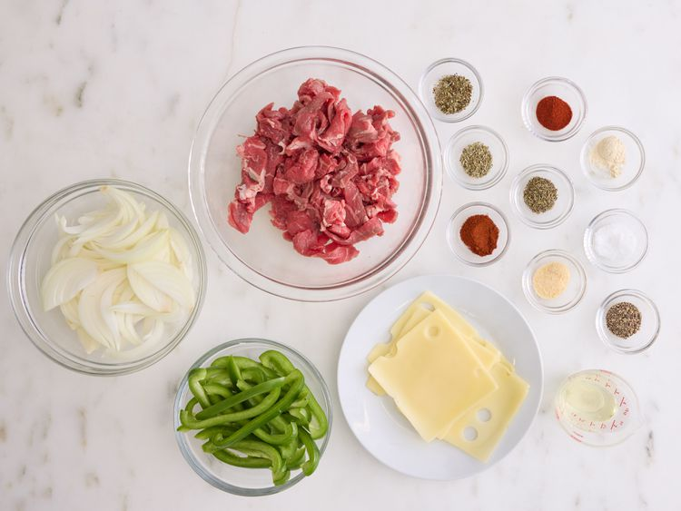
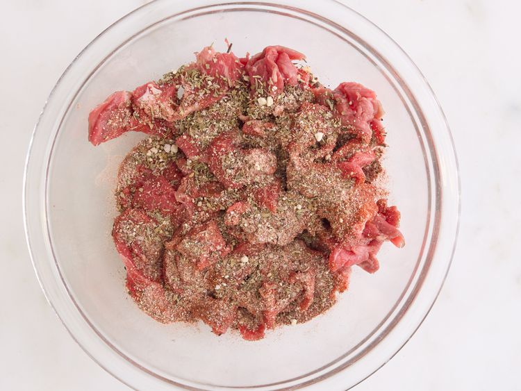
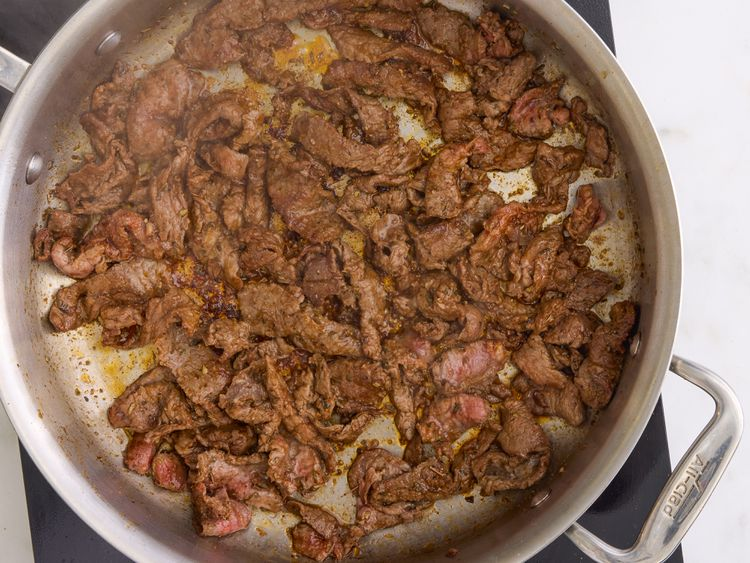
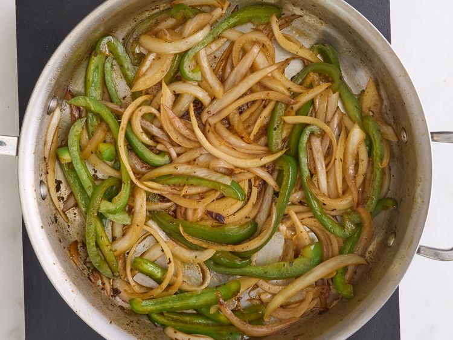
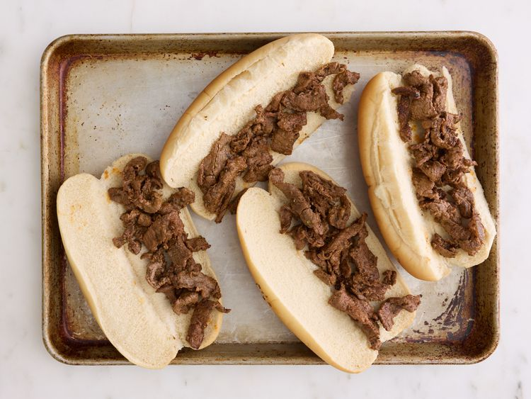
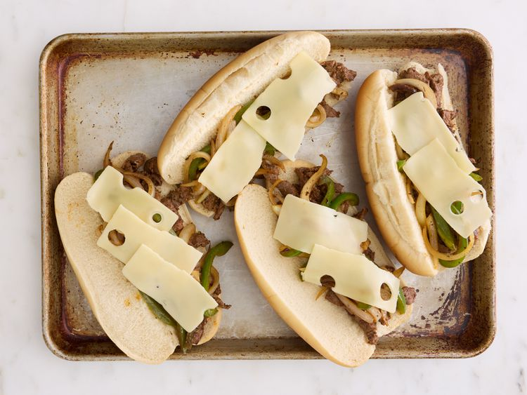
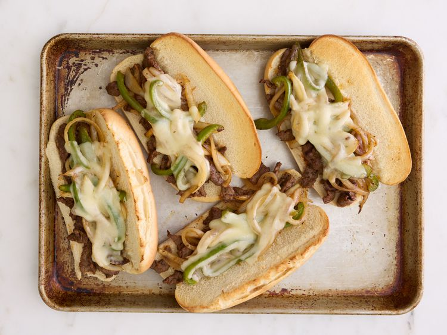

Apple Cider Hawaiian Roll Donuts
Home

One of the most delicious desserts you will ever taste!
This is a novice level recipe that can be made with basic kitchen appliances. This is what makes for such a wonderful recipe!
Ingredients
- 1 (12-count package) Hawaiian Rolls
- 1 cup apple pie filling
- 2 (0.74 ounce) pouches apple cider powdered drink mix (such as Alpine Spiced Apple Cider)
- 5 tablespoons butter, divided
- 1/2 cup sugar
- 1 teaspoon cinnamon
- Preheat the oven to 250 degrees F (175 degrees C).
- Separate Hawaiian rolls and cut a 1/2-inch slit in the side of each one. Use a finger or the end of a spoon to create a larger opening and a space large enough to fill each roll with about 1 tablespoon filling.
- Roughly chop apple pie filling and add to a bowl. Stir in 1 packet apple cider mix. Spoon filling into the prepared rolls.
- Melt 4 tablespoons butter and brush each roll on all sides with melted butter. Place rolls on a lined baking sheet.
- Bake rolls in the preheated oven until lightly toasted and golden brown, 12 to 14 minutes.
- Meanwhile, stir together remaining apple cider packet, sugar, and cinnamon in a shallow dish and melt remaining butter.
- Brush tops of rolls evenly with melted butter and coat each roll in sugar mixture.
Grilled Cheese Sandwich

Everyone needs to know how to make a classic grilled cheese sandwich. Whether you're a beginner cook or an old pro, you'll come back to this top-rated grilled cheese recipe again and again!
How to Make Grilled Cheese
You'll find a detailed ingredient list and step-by-step instructions in the recipe below, but let's go over the basics:
Grilled Cheese Ingredients
- 4 Slices White Bread
- 2 Slices Cheese
- 3 Tablespoons Butter, divided
- Mayonnaise (Optional)
Directions
- Gather all ingredients

- Preheat a nonstick skillet over medium heat. Generously butter one side of a slice of bread

- Place bread butter-side down in the hot skillet; add 1 slice of cheese

- Butter a second slice of bread on one side and place butter-side up on top of cheese.
- Cook until lightly browned on one side; filp over and continue cooking until cheese is melted
- Repeat with remaing 2 slices of bread, butter, and slice of cheese. Serve and enjoy!

Philly Cheesesteak

This Philly cheesesteak is made with sirloin sliced into strips and seasoned with a delicious blend of herbs and spices for a flavorsome sandwich. Sometimes I toast the hoagie roll before topping it with the steak, carmelized onions, peppers, and cheese
Ingredients
- 1/2 teaspoon salt
- 1/2 teaspoon black pepper
- 1/2 teaspoon paprika
- 1/2 teaspoon chili powder
- 1/2 teaspoon onion powder
- 1/2 teaspoon garlic powder
- 1/2 teaspoon dried thyme
- 1/2 teaspoon marjoram
- 1/2 teaspoon dried basil
- 1 pound beef sirloin, cut into thin 2 inch strips
- 3 tablespoons vegetable oil
- 1 onion, sliced
- 1 green bell pepper, julienned
- 3 ounces Swiss cheese, thin sliced
- 4 hoagie rolls, split lengthwise
Directions
- Gather all ingredients

- Mix salt, pepper, paprika, chili powder, onion powder, garlic powder, thyme, marjoram, and basil together in a small bowl

- Place steak in a large bowl; sprinkle seasoning mixture over top and stir to coat.

- Heat 1/2 of the oil in a skillet over medium-high heat. Add steak; cook and stir to the desired doneness. Transfer cooked steak to a plate

- Heat the remaining oil in the skillet. Add onion and green pepper; cook and stir until tender and caramelized

- Preheat the oven on the broiler setting. Divide cooked beef between the bottoms of 4 rolls.

- Layer with onion and green pepper

- Top with sliced cheese. Place on a cookie sheet.

- Broil in the preheated oven until cheese is melted

- Cover with tops and serve